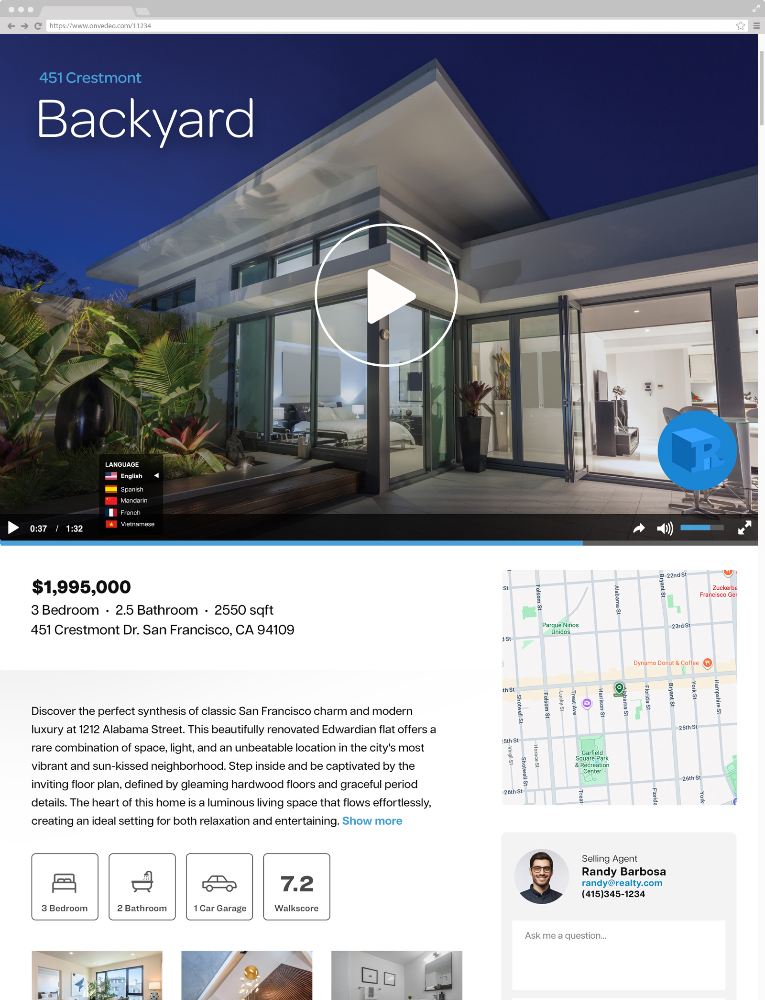

Onvedeo
My foray into start-up life was building a customizible video generation application with the ability to scale with large amounts of data.

TEAM
Product / Founder
Principal / Co-founder
Operations / Co-founder
Business Developer
2 Engineers
IMPACT
The Onvedeo video engine was used by the biggest Real Estate company in the world, Realogy (owner of Century 21, Coldwell Banker, Better Homes and Gardens Real Estate, etc.) among others to generate video listings for their properties nationwide.